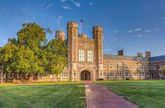

Our Global Campus
A campus is traditionally the land on which a college or university and related institutional building are situated.
.jpg)
London
.jpg)
New York

Making website is now one of the easiest thing in the world. you just need to learn HTML, CSS,
Javascript and you are good to go.
We will offer many more courses in our university.
This course offers an interdisciplinary approach to sustainabilityin Architecture. Learners will be introducedto the basic elements of sustainability assessments (first model layer), as well as trends informing the space today.
The course is multi-disciplinary and aims atproviding a strong foundation level understanding of the functioning of business organizations, commercial transactions and various specialised operations such as Accounting, Management by offering a comprehensive curriculum.
For more than two decades, MBA is considered as the most preferred post-graduation programme among the youth who considered management field as a career. University’s MBA Programme will nurture the students with the knowledge, skills and strategic perspectives essential to business leadership and successful managerial career internationally.
A campus is traditionally the land on which a college or university and related institutional building are situated.
Study skills unit,Careers service,Counselling,Financial assistance,Computer labs,etc.
.jpg)
The primary function of the university library is to bring together information or knowledge on the one hand and human beings on the other. Libraries have been traditionally organized by functional department, cataloging, acquisitions, periodicals, and so on.
1.jpg)
The great thing about being a student is that not everything is about sitting in a lecture or at a desk studying, with basketball play ground and sporting clubs keeping students moving between classes.
5.jpg)
The definition of a cafeteria is a self-service restaurant where you select and pay for food yourself, or a dining area where meals can be purchased or brought from home. The big room with a lunch line and tables where students eat their lunches while at university is an example of a cafeteria.
Testimonials are all about story-telling, about sharing your students' paths in a way that is both unique and general.
.jpg)
"My experience at Sharda University is great and memorable.The mentors at this University helped us enhance my academic and interpersonal skills. I am thankful to Training & Placement for this university."
"Great experience from Sharda. You get a lot of opportunities. Work hard to get it. Be prepared for everything. Maintain your attendance."